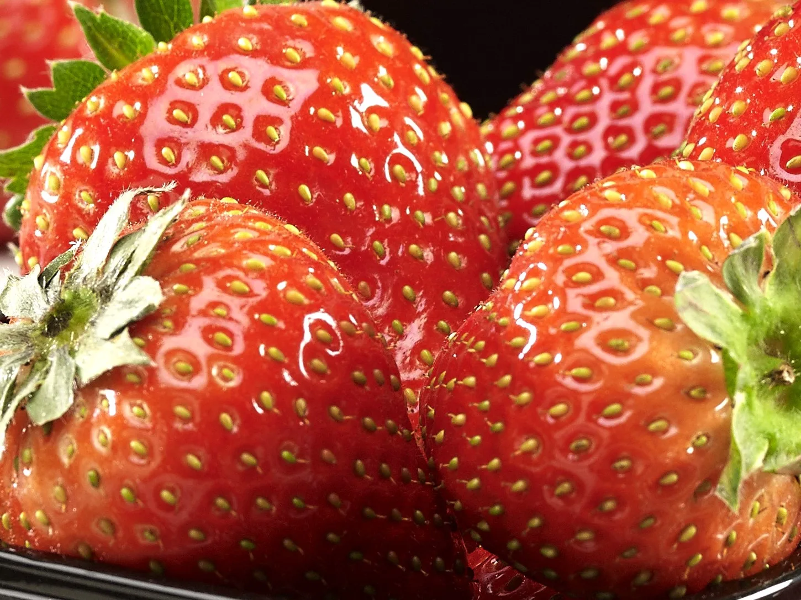

У семенного пути сильная сторона там, где сорт подбирают под технологию, а не просто под красивую ягоду.
Здесь выбор строится не по дачному принципу, а по логике фермы: как сорт ведёт себя под досветкой, что он даёт по генерации и когда уместны семена, а когда лучше идти в рассаду или Frigo.
Сначала сверяют сценарий запуска, канал сбыта и режим фермы. Уже потом выбирают конкретный сорт, семенной путь или профессиональную рассаду под более быстрый вход в цикл.
Семена, рассада и Frigo закрывают разные сценарии. Нормальный выбор начинается с ответа, что для вас важнее: скорость входа в цикл, контроль технологии, профиль ягоды или предсказуемость партии.


Ранний гибрид с высокой урожайностью, сладким вкусом с лёгкой кислинкой и крупной ягодой. Подходит, когда сорт выбирают под технологию фермы и канал сбыта.

Итальянская генетика, микроклональное оздоровление, хранение по технологии Frigo и двойной контроль качества для более предсказуемого старта.
Семенной путь и Frigo стоит смотреть как два разных сценария входа в ферму. Ниже весь актуальный набор, но выбирать его лучше уже с пониманием, что именно вы хотите запустить.



Ранний гибрид с крупной ягодой и сладким вкусом с лёгкой кислинкой. Хороший ориентир под стабильную коммерческую ягоду.
Ранний гибрид с сильным вкусом и ароматом. Подходит, когда нужен яркий потребительский профиль без отказа от урожайности.
Дневно-нейтральный гибрид с продолжительным плодоношением. Имеет смысл, когда важна длинная полка генерации и ровная коммерческая ягода.
Ранний гибрид с крупной ягодой и высокой урожайностью. Стоит смотреть, когда нужен быстрый вход в сбор и хороший внешний вид ягоды.
Гибрид с ранним и продолжительным плодоношением, если смотреть на него как на фермерский сорт, а не на “садовую картинку”.
Гибрид под высокую урожайность, привлекательный внешний вид и сильный вкусовой профиль. Подходит под задачу продажи свежей ягоды.
Отдельный сценарий старта, когда важнее скорость входа в цикл и предсказуемость посадочного материала, чем семенной путь.
Сначала лучше сверить сценарий запуска, канал сбыта и формат фермы. После этого уже становится понятно, идти в сорт, Frigo или расчёт всей схемы запуска.